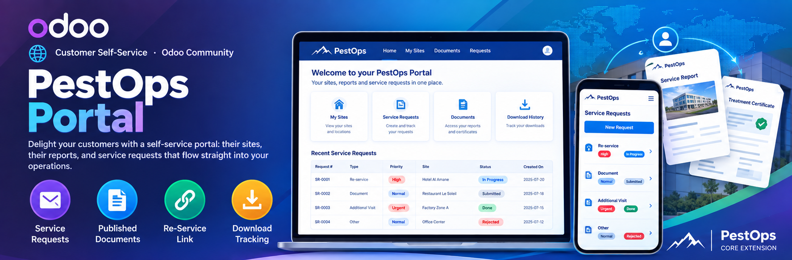
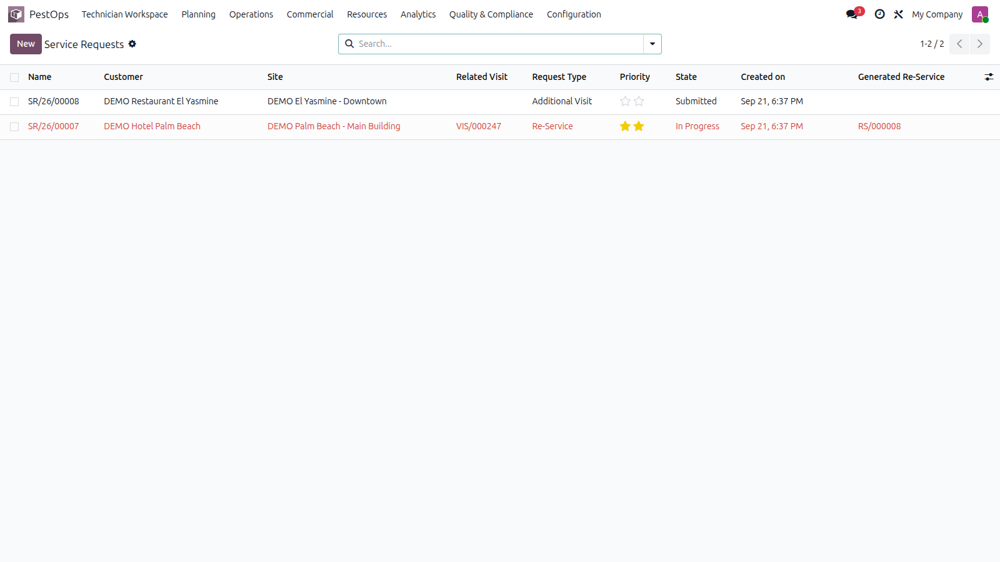
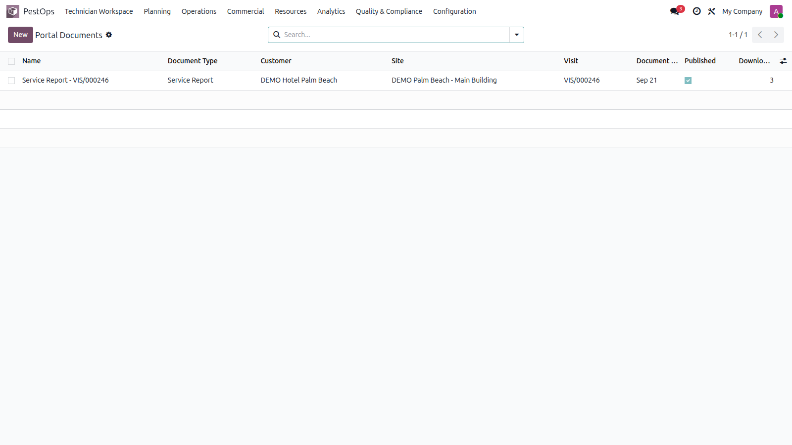

🌐 Customer Self-Service · Odoo Community
📨 Service Requests 📄 Published Documents 🔗 Re-Service Link ⬇️ Download Tracking


Customer service requests with priorities and states.
No more "please resend the report" phone calls. Documents are published, requests are structured, and every callback becomes a tracked re-service.
🏨 Key Accounts 🍽️ Restaurant Chains 🏭 Multi-Site Groups 🏢 Facility Managers
Customers submit re-services, additional visits or document requests from the portal with description and priority. Your team triages them (submitted → in progress → done / rejected) and generates the re-service in one click, permanently linked to the request and the originating visit.
Publish service reports, treatment certificates, contract documents and more — scoped to a customer, site, visit or treatment. Downloads are counted, consistency is validated (a visit's document must belong to the same customer), and unpublished items stay internal.

Published portal documents with download tracking.
| Odoo Version | Community |
|---|---|
| License | LGPL-3 |
| Module Type | Extension (requires PestOps Core) |
| Dependencies | pestops_core, portal |
| External Services | None required |
📧 imazighenapps@gmail.com — fast response 🔄 Free Updates